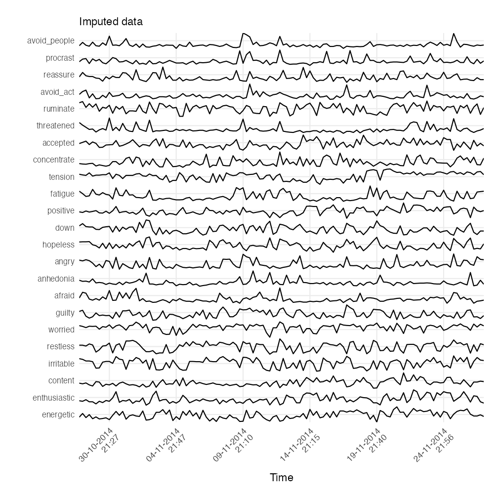
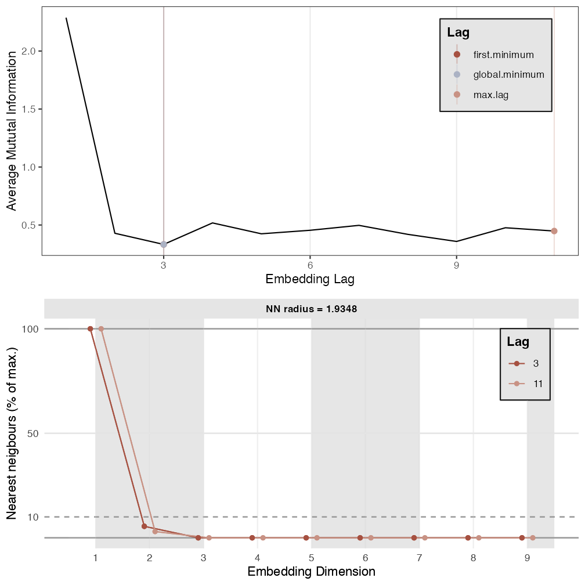

Recurrence Networks
Fred Hasselman
2021-07-07
Source:vignettes/RecurrenceNetworks.Rmd
RecurrenceNetworks.RmdRecurrence Networks
Recurrence networks are graphs created from a recurrence matrix. This means the nodes (vertices) of the graph represent values observed at specific time points and the connections (edges) between nodes represent a recurrence relation between the values observed at those time points. In a reconstructed or multidimensional (coarse grained) state space, the values represent some measure of distance between the observed states (coordinates in state space).
We can turn the recurrence matrix into an adjacency matrix, e.g. an igraph object in R. This means we can use all the igraph functions to calculate network measures. The main differences between the recurrence matrix as used for (C)RQA and the adjacency matrix is that the latter can represent weighted, as well as directed recurrence networks. The interpretation of the network measures calculated from a recurrence network is somewhat different from when the nodes do not represent time. The ultimate reference for learning about recurrence networks is:
Package casnet has some functions to create recurrence networks, they are similar to the functions used for CRQA: * rn() is very similar to rp(), it will create a matrix based on embedding parameters, or on a multivariate dataset. One difference is the option to create a weighted and/or directed matrix. This is a matrix in which non-recurring values are set to 0, but the recurring values are not replaced by a 1, the distance value (or recurrence time) is retained and acts as an edge-weight * rn_plot() will produce similar plots as rp_plot(), with some differences for weighted and directed networks * rn_measures() produces several common network measures used with recurrence networks.
ESM data
We’ll use the same dataset as in the vignette Dynamic Complexity by Bastiaansen et al. (2019). Load it from the Open Science Framework, or use the internal data.
library(casnet)
library(invctr)
# # Load data from OSF https://osf.io/tcnpd/
# require(osfr)
# manyAnalystsESM <- rio::import(osfr::osf_download(osfr::osf_retrieve_file("tcnpd") , overwrite = TRUE)$local_path)
# Or use the internal data
data(manyAnalystsESM)A visual inspection of the data reveals some variables can be omitted and cases with missing values need to be imputed or removed. We’ll use the same strategy as explained in the Dynamic Complexity vignette.
library(tidyverse)
library(igraph)
plotTS_multi(manyAnalystsESM, subtitle = "Raw data")
# Use the date information in the dataset to create time series objects
dates <- format(strptime(manyAnalystsESM$start[!is.na(manyAnalystsESM$start)], "%m/%d/%Y %H:%M"), "%d-%m-%Y\n%H:%M")
weeknum <- as.numeric(format(strptime(manyAnalystsESM$start[!is.na(manyAnalystsESM$start)], "%m/%d/%Y %H:%M"),format = "%V"))
# days <- format(strptime(dates, "%m/%d/%Y %H:%M"), "%d-%m-%Y")
# time <- format(strptime(dates, "%m/%d/%Y %H:%M"), "%H:%M")
# Don't use columns 1, 26-28, 30-35
df <- manyAnalystsESM[,-c(1:3, 26:28, 30:35)]
# 1. Remove NA
out.NA <- df[stats::complete.cases(df),]
# 2. Classification And Regression Trees / Random Forests
imp.cart <- mice::mice(df, method = 'cart', printFlag = FALSE)
out.cart <- mice::complete(imp.cart)
out.cart$dates <- dates
plotTS_multi(out.cart, subtitle = "Imputed data", timeVec = "dates"%ci%out.cart)
The first step is to create a recurrence matrix and consider it an adjacency matrix. This matrix can be created based on the reconstructed state space using the method of delay embedding, or, on a multidimensional state space in which the dimensions are a (subset) of the multivariate time series.
Reconstructed State Space
Below is an example of how to create a recurrence network based on a reconstructed state space. We’ll examine the variables restless and procrast.
#----------------------
# Adjacency matrix
#----------------------
library(casnet)
p1 <- est_parameters(y = out.cart$restless)
p2 <- est_parameters(y = out.cart$procrast)
# By passing emRad = NA, a radius will be calculated based on 5% recurrence
RN1 <- casnet::rn(y1 = out.cart$restless, emDim = p1$optimDim, emLag = p1$optimLag, emRad = NA, targetValue = 0.05)
>
> Searching for a radius that will yield 0.05 for RR
casnet::rn_plot(RN1)
# Get RQA measures
rqa1 <- casnet::rp_measures(RN1, silent = FALSE)
>
> ~~~o~~o~~casnet~~o~~o~~~
>
> Global Measures
> Global Max.points.theiler N.points Recurrence.Rate Singular.points
> 1 Recurrence Matrix 14161 767 0.0542 588
> Divergence Repetitiveness
> 1 0.0084 1.47
>
>
> Line-based Measures
> Line.based N.lines N.points.on.lines Measure Rate Mean Max
> 1 Diagonal 31 179 Determinism 0.233 5.77 119
> 2 Vertical 62 132 V Laminarity 0.172 2.13 3
> 3 Horizontal 62 132 H Laminarity 0.172 2.13 3
> Entropy.of.lengths Relative.entropy CoV.of.lengths
> 1 0.143 0.0298 3.639
> 2 0.385 0.0805 0.159
> 3 0.385 0.0805 0.159
>
> ~~~o~~o~~casnet~~o~~o~~~
# Create RN graph
g1 <- igraph::graph_from_adjacency_matrix(RN1, mode="undirected", diag = FALSE)
igraph::V(g1)$size <- igraph::degree(g1)
g1r <- casnet::make_spiral_graph(g1,
markEpochsBy = weeknum[1:vcount(g1)],
markTimeBy = TRUE)
# Get RN measures
rn1 <- rn_measures(g1, silent = FALSE)
>
> ~~~o~~o~~casnet~~o~~o~~~
>
> Global Network Measures
>
> EdgeDensity MeanStrengthDensity GlobalClustering NetworkTransitivity
> 1 0.04614727 NA 0.5243076 0.6018237
> AveragePathLength GlobalEfficiency
> 1 83.98932 8.030948
>
> ~~~o~~o~~casnet~~o~~o~~~
# Should be the same
rqa1$RR==rn1$graph_measures$EdgeDensity
> [1] FALSETS 2
#----------------------
# Adjacency matrix TS_2
#----------------------
plot(ts(series$TS_2))
# Because these are generated signals, look for a drop in FNN below 1%.
p2 <- est_parameters(y = series$TS_2, nnThres = 1)
RN2 <- rn(y1 = series$TS_2, emDim = p2$optimDim, emLag = p2$optimLag, emRad = NA, targetValue = 0.05)
rn_plot(RN2)
# Get RQA measures
rqa2 <- rp_measures(RN2, silent = FALSE)
# Create RN graph
g2 <- igraph::graph_from_adjacency_matrix(RN2, mode="undirected", diag = FALSE)
V(g2)$size <- degree(g2)
g2r <- make_spiral_graph(g2, arcs = arcs, epochColours = getColours(arcs), markTimeBy = TRUE)
# Get RN measures
rn2 <- rn_measures(g2, silent = FALSE)
# Should be the same
rqa2$RR==rn2$graph_measures$EdgeDensityTS 3
#----------------------
# Adjacency matrix TS_3
#----------------------
plot(ts(series$TS_3))
# Because these are generated signals, look for a drop in FNN below 1%.
p3 <- est_parameters(y = series$TS_3, nnThres = 1)
RN3 <- rn(y1 = series$TS_3, emDim = p3$optimDim, emLag = p3$optimLag, emRad = NA, targetValue = 0.05)
rn_plot(RN3)
# Get RQA measures
rqa3 <- rp_measures(RN3, silent = FALSE)
# Create RN graph
g3 <- igraph::graph_from_adjacency_matrix(RN3, mode="undirected", diag = FALSE)
V(g3)$size <- degree(g3)
g3r <- make_spiral_graph(g3,arcs = arcs ,epochColours = getColours(arcs), markTimeBy = TRUE)
# Get RN measures
rn3 <- rn_measures(g3, silent = FALSE)
# Should be the same
rqa3$RR==rn3$graph_measures$EdgeDensityMultiplex Recurrence Networks
Consider the three time series to be part of a multi-layer recurrence network. Common properties of the multiplex network are inter-layer mutual information and edge overlap can be calculated using function casnet::mrn(). One problem, the networks have to be all of the same size (same number of nodes, a multivariate time series), but here we have reconstructed the phase space using different embedding parameters… let’s choose one set of parameters for all time series.
emDim <- mean(c(p1$optimDim,p2$optimDim,p3$optimDim))
emLag <- median(c(p1$optimLag,p2$optimLag,p3$optimLag))
RNs <- plyr::llply(1:3, function(r) rn(y1 = series[,r], emDim = emDim, emLag = emLag, emRad = NA, targetValue = 0.05))
layers <- plyr::llply(RNs, function(r) igraph::graph_from_adjacency_matrix(r, mode="undirected", diag = FALSE))
names(layers) <- c("g1","g2","g3")
mrn(layers = layers)A variety of plots can be created using casnet::mrn_plot()
# Simple
mrn_plot(layers = layers, showEdgeColourLegend =TRUE)
mrn_plot(layers = layers, MRNweightedBy = "EdgeOverlap", showEdgeColourLegend =TRUE)
# Include picture of Layers
mrn_plot(layers = layers, RNnodes = TRUE)
mrn_plot(layers = layers, RNnodes = TRUE,MRNweightedBy = "EdgeOverlap", showEdgeColourLegend =TRUE)Time-varying Multiplex Recurrence Networks
The MRN can be calculated in a sliding window, by setting the arguments win and step.
# This will generate 26 windows
MRN_win <- mrn(layers = layers, win = 250, step = 10)
# The MRN are returned as a list
MRN_win$interlayerMI
# It may be informative to create an animation [not shown here because it displays in the Viewer]
# MRN_ani <- mrn_plot(layers = layers, win = 250, step = 10, createAnimation = TRUE)
# The animation is stored in an output field, but is also saved as a .gif, see the man pages for more options.
# MRN_ani$MRNanimationGG